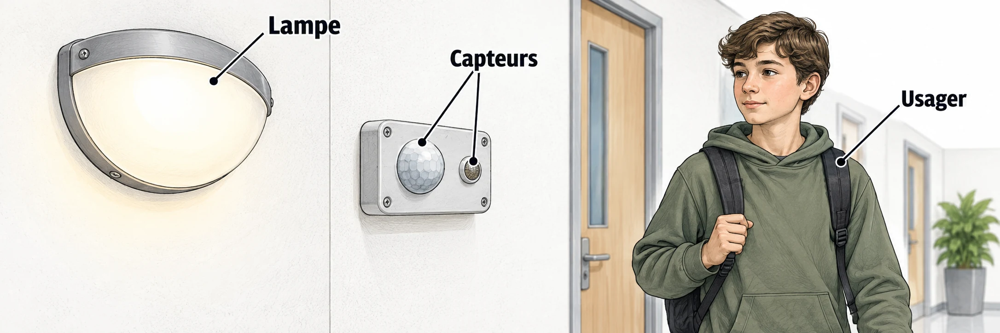

OBSERVER · EXPÉRIMENTER · EXPLIQUER
Corriger un programme trop gourmand
Compare plusieurs comportements automatiques et l’effet d’un bouton manuel.

✎ Garde ta feuille à côté de toi.Ordinateur : manipulations et mesures simulées. Papier : relevés, réponses, calculs et croquis. Matériel réel : essai complémentaire si disponible.
À toi de construire le programme
Pars de ton projet précédent. Sépare lecture des entrées et décision ; ajoute le bouton manuel et une liste des résultats. Teste les huit combinaisons de la fiche.
Utilise Scratch installé sur le poste, ou la version en ligne indiquée par le professeur. Aucun compte personnel nécessaire pour travailler sans partage.
Des observations pour expliquer
- Q1–Q4 : note les contre-exemples et complète tes huit combinaisons.
- Q5–Q6 : programme la modification dans Scratch et conserve les essais sur papier.
Appuie ton explication sur une valeur, un changement observé ou une comparaison. Distingue ce que montre le modèle et ce qui reste à vérifier.